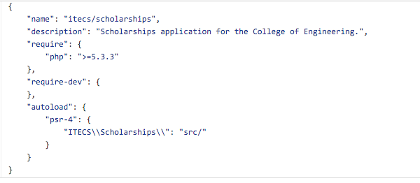

Pulling Up Your Legacy App by Its Bootstraps
by Emily Stamey
© photo by Gen Gibler
Emily Stamey
Application Developer @ NC State University
Twitter: @elstamey
Blog: elstamey.com
Emily Stamey
Application Developer @ NC State University
- Developing PHP applications since 1999
- Primarily supporting legacy applications
- My department supports about 80 applications that support business processes of the College of Engineering
Supporting Legacy is Hard
It's harder to read code than to write it. This is why code reuse is so hard.- Joel Spolsky
Why Bootstrapping is important
A lot of web development work involves supporting legacy applications
It is HARD to justify refactoring
Bootstrapping gives you flexibility to support your application
Let's review some terminology... (source: wikipedia)
Legacy Software
Software developed using older technologies and practices. It can be difficult to replace because of its wide use.
Often a pejorative term, referencing a system as "legacy" often implies that the system is out of date or in need of replacement.
Spaghetti Code
The relationships between pieces of code are so tangled, it’s nearly impossible to add or change something without unpredictably breaking something.
Lasagna code
Lasagna code is code that has way too many layers.
In Object Oriented programming, this means code that has many really small classes when a few slightly larger classes would have done the trick.
Refactor
Technique for restructuring an existing body of code, altering its internal structure without changing its external behavior.
Technical Debt
A metaphor referring to the eventual consequences of any system design, software architecture or software development within a codebase.
Bootstrapping
In software this usually means, building onto an existing system for the purpose of improvement with the least amount of sweat equity and development cost in the process.
Why Bootstrapping is important
A lot of web development work involves supporting legacy applications
It is HARD to justify refactoring
Bootstrapping gives you flexibility to support your application
The Project: Scholarships
The Project: Scholarships
Engineering Foundation receives money from donors to give to students
Students apply each year giving information about themselves
Donors specify criteria/rules for students to receive money
- The information in a student's application helps them match to scholarships
Selection Committee selects Candidates to receive money
Scholarship Coordinator reports these Recipients to Financial Aid
Financial Aid awards the money
How to Bootstrap
Survey Your Application
Legacy projects have business value baked in, that you must preserve.
Organize the Work to be done
Based on the bugs, new features, etc. You have to balance needs vs. wants to deliver this product.
How to Bootstrap
Survey Your Application
Legacy projects have business value baked in, that you must preserve.
Organize the Work to be done
Based on the bugs, new features, etc. You have to balance needs vs. wants to deliver this product.
Survey Your Application
Talk to users of the application
Study the codebase
Examine the new feature requests
Survey Your Application
Talk to users of the application
Study the codebase
Examine the new feature requests
Talk to Users of the Application
Is their process consistent with the application?
What are the pain points?
Do they have concerns with the application?
Don’t rely on developer feedback
Talk to Users of the Application
Is their process consistent with the application?
What are the pain points?
Do they have concerns with the application?
User Feedback: Scholarship Process
Process was inconsistent with the application
Selection Committee used a spreadsheet of available scholarship money
Selected Candidates were added to a spreadsheet Student ID and Amount and Term of award
Talk to Users of the Application
Is their process consistent with the application?
What are the pain points?
Do they have concerns with the application?
User Feedback: Scholarship Pain Points
High Margin of Error
Their process was exiting and re-entering the system through spreadsheets
Talk to Users of the Application
Is their process consistent with the application?
What are the pain points?
Do they have concerns with the application?
User Feedback: Scholarship Concerns
They didn’t trust that Selection Committee was choosing the best candidates
The Scoring algorithm was not clear/effective
Multiple majors weren't allowed by our system
NOT ALL MONEY WAS BEING AWARDED
MONEY LEFT UN-GIVEN ⇒ ANGRY DONORS
Survey Your Application
Talk to users of the application
Study the codebase
Examine the new feature requests
Study the codebase
Talk to past/current developers
Verify that key functionality does what everyone thinks it does
Look for entanglements
Codebase of Scholarship
Large App model
SQL queries, only slightly dynamic
Functions weren’t single-purpose
No Bounded Contexts between Students, Selection, and Foundation
Codebase of Scholarship
Student data was a single row in table
Academic information wasn’t updated when it changed
Major was a single column in that row
Survey Your Application
Talk to users of the application
Study the codebase
Examine the new feature requests
Examine New Feature Requests
What new features are needed?
How they might be implemented?
New Features: Scholarships
Explicit criteria matching, excluded non-matching applicants
Current student data, query their GPA, Major, etc at time of selection
Students have multiple majors
How to Bootstrap
Survey Your Application
Legacy projects have business value baked in, that you must preserve.
Organize the Work to be done
Based on the bugs, new features, etc. You have to balance needs vs. wants to deliver this product.
Decision Time
Is there another application that can do what it does? Is it better?
Is this a worthwhile investment?
If so, what are the Most Valuable Features?
Build Trust with Users
Explain why this work is necessary
Be open about errors in the application
Set Expectations
Customer has an open door to you
add work from the side
change processes
Keep the door open anyway!
Scope the work to be done
Bootstrapping grows FAST!
Large projects
require more people to be engaged in the process
wear people down over time
How to Organize the work
Use your Research
Prioritize the needs
Scope the work you are agreeing to do
Plan Features for Scholarships
Divided the application based on first need in the process
Student Application
Funding
Selection
Reports for Funding and Scholarship Coordinator
we didn't scope the work
Mitigate Risk
Control Risk Before Bootstrapping
Version control
Stabilize the code base and preserves history
Development and Staging environments (w/ Fake data)
No more developing in production!!!!
Control Risk Before Bootstrapping
Involve Users to work through the process
Keep the constant feedback loop
Test Everything You Need
Acceptance tests stabilize functionality you need
added hooks for testing interfaces
Codeception needed to view contents of the pages
Unit and Functional tests for everything you build
Database Migrations: Phinx
Allows you to change DB across evironments
Gives you power to undo the change if there is a problem
$ vendor/bin/phinx create CreateUserLoginsTable
<?php
use Phinx\Migration\AbstractMigration;
class CreateUserLoginsTable extends AbstractMigration
{
/**
* Example One: Change
*/
public function change()
{
// create the table
$table = $this->table('user_logins');
$table->addColumn('user_id', 'integer')
->addColumn('created', 'datetime')
->create();
}
/**
* Example Two: Up/Down with Migrate/Rollback
*/
public function up()
{
$table = $this->table('users');
$table->renameColumn('bio', 'biography');
}
/**
* Migrate Down.
*/
public function down()
{
$table = $this->table('users');
$table->renameColumn('biography', 'bio');
}
}Database Migrations: Phinx
$ vendor/bin/phinx migrate
$ vendor/bin/phinx rollback
Configuration file
DB connections
Base URL
Set paths to twig templates
Customize Notice messages
Set config variables for services
<?php
return array(
'app' => array(
'base_url' => sprintf('http://localhost:%s/', isset($_SERVER['SERVER_PORT']) ? $_SERVER['SERVER_PORT'] : ''),
'index_page' => 'index.php/',
'debug' => FALSE
),
'db' => array(
'default' => array(
'hostname' => "local__server",
'port' => "3306",
'username' => "uname",
'password' => "pword",
'database' => "db_name_"
)
),
'twig' => array(
'template_path' => array(
__DIR__ . '/templates',
__DIR__ . '/templates/dashboard',
)
),
'authorization' => array(
'funding' => array('elstamey', 'person2'),
'developers' => array('elstamey'),
'coordinators' => array('person3')
),
'notice' => array(
'enabled' => false,
'type' => 'info',
'headline' => null,
'message' => null,
'syslink' => null
),
'errorHandling' => array(
'emailExceptions' => false
),
'awardLetters' => array(
'letterhead' => '_itecs/notification-samples/ncsu_coe_aa_letterhead.pdf',
'academicYears' => '2015-2016',
'respondByDate' => 'May 11, 2015',
'templates' => array(
'awardLetter' => 'layouts/letters/award-letter.twig',
'awardEmail' => 'layouts/letters/award-email-body.twig'
),
'fixedAttachments' => array(
'_itecs/notification-samples/thank_you_template.pdf'
),
'signatureImagePath' => '_uploads/tmp/deans_signature.png',
'outputPath' => '_uploads/awardLetters/'
),
'emailService' => array(
'sendLimit' => 5,
'retries' => 3,
'throttleTime' => 2, // seconds
'fromAddress' => 'Scholarships Application <engr-webmaster@ncsu.edu>',
'replyToAddress'=>'College of Engineering <engineering@ncsu.edu>'
)
);
?>Bootstrapping Scholarships: Filetree
- new code in
/srcalongside the/appdirectory

Bootstrapping Scholarships: Composer
/srcis given a namespacenamespaces are autoloaded in composer

Composer packages
- Phinx for database migrations
- Illuminate database
- Twig templates
- Testing packages (Codeception, PHPUnit, Mockery)
- Moneyphp for handling currency
- Pimple containers
Bootstrapping Scholarships: Connecting the Dots
/app/bindings.phpdefine containers for each of the new Services, Repositories, Projections/app/controllers
new controllers for the new functionality/app/services.phpdefined and configured twig, database, et al
Containers
Containers
/app/bindings.php
<?php
use /Scholarships/Selection/Infrastructure/Storage/HybridSourcedScholarshipRepository;
$container['/Scholarships/Selection/Domain/Scholarship/ScholarshipRepository'] = function($c) {
return new HybridSourcedScholarshipRepository(
$c['ScholarshipsSupportEventsEventStore'],
$c['database'],
$c['ScholarshipsCommonServicesDepartmentsService'],
$c['ScholarshipsCommonServicesResidenciesService'],
$c['ScholarshipsCommonServicesAcademicPlansService'],
$c['Scholarships/Selection/Domain/CollaborationsService']
); };Controllers
Controllers
class Selectionnext extends BaseController
{
public function Selectionnext()
{
parent::BaseController();
$this->scholarshipRepository = $this->container['Scholarships/Selection/Domain/Scholarship/ScholarshipRepository'];
}
protected function scholarshipsDashboard($scholarshipId)
{
$committeeMember = $this->getCommitteeMember();
$scholDetails = $this->getScholarshipDashboard($scholarshipId);
$this->render('pages/scholarship-details.twig', array("scholarship" => $scholDetails)));
}
private function getScholarshipDashboard($scholarshipId,$keepItLight=false)
{
$committeeMember = $this->getCommitteeMember();
$presenter = new ScholarshipDashboardPresenter(
$committeeMember,
ScholarshipId::fromString($scholarshipId),
$this->events,
$this->scholarshipRepository,
$this->container['Scholarships/Selection/Domain/ApplicantQueryService']
);
$scholDetails = $presenter->asArrayForJson();
$scholDetails['json_string'] = json_encode($scholDetails);
return $scholDetails;
}
?>Bootstrap the application
Within CodeIgniter
New Controllers for new functionality
Bindings for CodeIgniter to find the new code
New Twig templates beside the existing Views in
/app
Summary: Scholarship Wins!
Restored confidence in selection process!
Fewer awards were rejected!
More Scholarship Money was awarded than ever before!
By May 2015: Approximately $1,074,394 Awarded for 2015-16
Summary: Lessons Learned
Huge time investment (approx. 9 months to complete selection) With more work over the summer to complete
Over time we lost participation because we have too many other projects needing attention
Tight deadlines with un-scoped work, we created technical debt that we would have to address in the next academic year
Summary: Was It Worth It?
University is replacing it this year
- We learned a lot of new techniques
- bootstrap
- event sourcing
- Domain-Driven Design
- Command Query Response Segregation
- managing projects
- A LOT!
QUESTIONS?
Emily Stamey Application Developer @ NC State University
Twitter: @elstamey
Blog with Bootstrapping details: elstamey.com